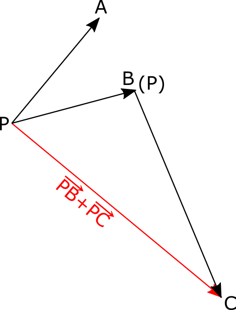
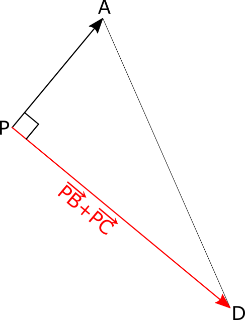
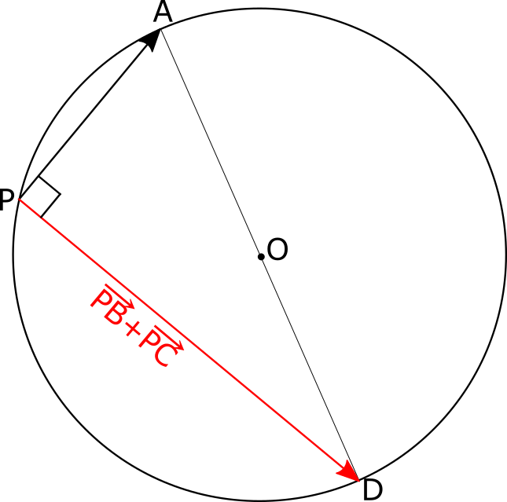

問題
平面上の \(\triangle\)\(ABC\) と任意の点 \(P\) に対し, ベクトル方程式 \(\vec{PA}・\vec{PB}=-\vec{PA}・\vec{PC}\) はどのような図形を表すか。
注目ポイント！
○○方程式と出た場合
解答への第一歩
右辺を「0」になるように方程式を整理する
解説
ベクトル方程式 \(\vec{PA}・\vec{PB}=-\vec{PA}・\vec{PC}\) を整理する。
\(\begin{eqnarray} \vec{PA}・\vec{PB} &=& -\vec{PA}・\vec{PC} \\ \vec{PA}・\vec{PB} + \vec{PA}・\vec{PC} &=& 0\\ \vec{PA}・\left(\vec{PB} + \vec{PC}\right) &=& 0 \end{eqnarray}\)
ここで\(\vec{PA}\) と \(\left(\vec{PB} + \vec{PC}\right)\)（下図の赤いベクトル）の内積が0だと分かる。
ベクトルの垂直条件よりこの2つのベクトルは垂直である。
また、 \(\left(\vec{PB} + \vec{PC}\right)\) の終点を点Dと名付けると, \(\triangle APD\)は直角三角形となる。

このとき, 点Pは線分ADを半分にする点を中心とした円周上を動くから, その点をOとすると, 下図のような図形を表している。
 以上より、このベクトル方程式が表している図形は, 点A と 点D をつないだ線分の半分の点Oを中心とし,円周上に点A,P,D を持つ円を表している。